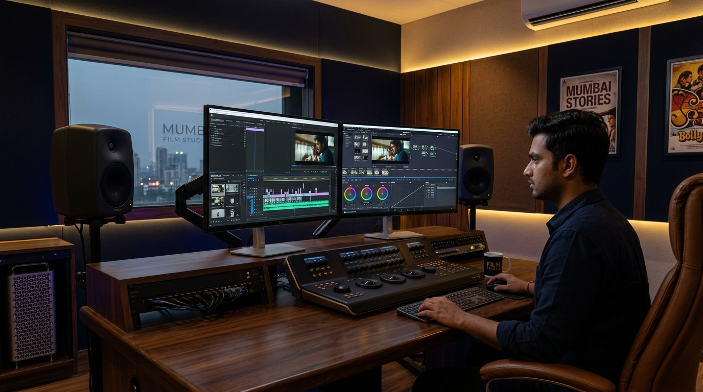
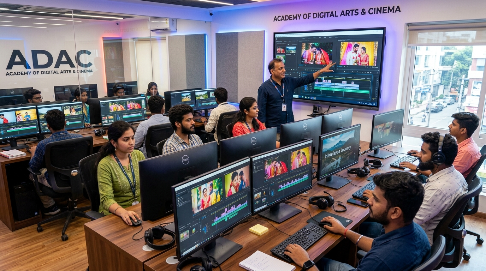
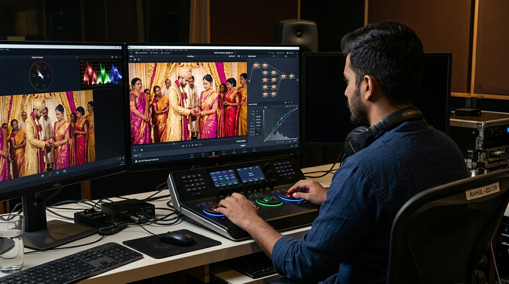
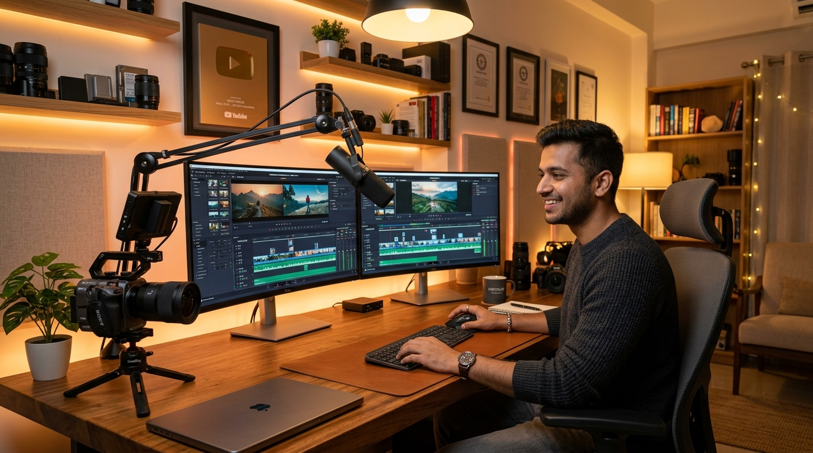

"आज video editing सिर्फ films और television तक limited नहीं है। Wedding films, YouTube videos, Instagram Reels, commercial advertisements, podcasts और digital media content के लिए professional video editors की मांग भारत में रिकॉर्ड स्तर पर पहुंच चुकी है। अगर आप भी video editing में एक high-paying creative career बनाना चाहते हैं, तो सही institute choose करना आपकी सफलता की सबसे पहली सीढ़ी है।"
India में आज दर्जनों Video Editing Institutes in India available हैं, लेकिन सच्चाई यह है कि हर institute का course structure, software stack, lab facilities और training method बिल्कुल different होता है। कोई institute pure theoretical filmmaking पर focus करता है, कोई visual effects (VFX) और 3D animation पर, जबकि कुछ गिनी-चुनी premium academies 100% practical video editing, raw footage cuts, cinematic color grading और real client projects पर focus करती हैं।
इस comprehensive article में हम Top 10 Video Editing Institutes in India के बारे में गहराई से समझेंगे—उनका syllabus, software training, fee structure, hostel facility और suitability—ताकि आप अपने specific career goal और learning requirement के अनुसार Best Video Editing Institute in India का सही चुनाव कर सकें।
Why Choose a Professional Video Editing Course in India?
आज के दौर में Video editing software जैसे Premiere Pro या DaVinci Resolve चलाना सीखना कोई बहुत बड़ा rocket science नहीं है। YouTube पर भी software के basic tools और shortcuts मिल जाते हैं। लेकिन क्या सिर्फ buttons और timeline cuts जान लेना एक professional editor बनने के लिए enough है? बिल्कुल नहीं!
एक सच्चा Best Video Editing Course in India आपको सिर्फ tool operation नहीं सिखाता, बल्कि एक visual storyteller बनाता है। एक professional video editor बनने के लिए आपको निम्नलिखित core capabilities सीखनी होती हैं:

Top 10 Video Editing Institutes in India: Detailed Analysis & Ranking (2026)
नीचे हमने भारत के टॉप 10 वीडियो एडिटिंग संस्थानों का निष्पक्ष और व्यावहारिक विश्लेषण प्रस्तुत किया है ताकि आप अपने बजट, लोकेशन और करियर लक्ष्यों के आधार पर सही फैसला ले सकें:
1. Quick Art Photography Academy – Siwan, Bihar
Quick Art Photography Academy भारत का सबसे लोकप्रिय और व्यावहारिक वीडियो एडिटिंग संस्थान है, जो विशेष रूप से उन छात्रों के लिए पहली पसंद है जो wedding filmmaking, cinematic color grading, Premiere Pro, DaVinci Resolve, EDIUS, photo editing और real production workflow में तुरंत कमाई करने योग्य स्किल हासिल करना चाहते हैं।
इस अकादमी का मुख्य दर्शन सिर्फ सॉफ्टवेयर के बटन सिखाना नहीं है, बल्कि छात्र को अनकट रॉ फुटेज (Raw Footage) देकर पहले दिन से फाइनल एक्सपोर्ट और क्लाइंट डिलीवरी तक की पूरी प्रक्रिया खुद उनके हाथों से करवाना है। अकादमी में 100% हाई-एंड GPU वर्कस्टेशन, 1-on-1 मेंटरशिप और पूरे भारत से आने वाले छात्रों के लिए मुफ्त हॉस्टल एवं रहने की सुविधा (Free Hostel Facility) उपलब्ध है।
2. Film and Television Institute of India (FTII) – Pune
FTII Pune भारत का सबसे प्रतिष्ठित सरकारी फिल्म संस्थान है। यहां वीडियो एडिटिंग को किसी सॉफ्टवेयर स्किल के रूप में नहीं, बल्कि सिनेमाई आर्ट और नैरेटिव विजुअल स्टोरीटेलिंग के रूप में गहराई से पढ़ाया जाता है। यहां के एडिटिंग प्रोग्राम्स में फिक्शन, नॉन-फिक्शन डॉक्यूमेंट्री, साउंड डिजाइन, एनालॉग से डिजिटल पोस्ट-प्रोडक्शन का संपूर्ण इतिहास और थ्योरी शामिल है।
3. AAFT School of Cinema – Noida
AAFT School of Cinema फिल्म सिटी नोएडा में स्थित एक बड़ा मीडिया संस्थान है। यह वीडियो एडिटिंग और साउंड रिकॉर्डिंग में डिग्री, डिप्लोमा और शॉर्ट-टर्म सर्टिफिकेट प्रोग्राम्स प्रदान करता है। यहां छात्रों को न्यूज़ रूम एडिटिंग, टीवी शो कटिंग, और बेसिक फिल्म पोस्ट-प्रोडक्शन का माहौल मिलता है।

4. MAAC (Maya Academy of Advanced Cinematics)
MAAC का फ्लैगशिप प्रोग्राम Compositing & Editing Plus उन छात्रों के लिए डिज़ाइन किया गया है जो वीडियो एडिटिंग के साथ-साथ विज़ुअल इफेक्ट्स (VFX), क्रोमा कीइंग (Green screen), रोटोस्कोपी और मोशन ट्रैकिंग सीखना चाहते हैं।
5. Whistling Woods International – Mumbai
प्रसिद्ध फिल्ममेकर सुभाष घई द्वारा स्थापित Whistling Woods International एशिया के सबसे बड़े फिल्म व मीडिया स्कूलों में से एक है। इनके एडिटिंग प्रोग्राम्स में कटिंग की साइकोलॉजी, सीन कंस्ट्रक्शन, डायलॉग एडिटिंग, म्यूजिकल मॉन्टाज और डायरेक्टर्स विजन पर विशेष ध्यान दिया जाता है।
6. Arena Animation
Arena Animation भारत का सबसे बड़ा मल्टीमीडिया ट्रेनिंग नेटवर्क है। इनके Digital Media & Video Editing कोर्स में बेसिक वीडियो कटिंग, ग्राफिक डिजाइन, और मोशन ग्राफिक्स के फंडामेंटल्स सिखाए जाते हैं।
7. Frameboxx 2.0 Animation & Visual Effects
Frameboxx 2.0 मोशन ग्राफिक्स और डिजिटल पोस्ट-प्रोडक्शन का मजबूत विकल्प है। इनका पाठ्यक्रम छात्रों को कमर्शियल एड्स और डिजिटल कंटेंट के लिए टाइटल एनिमेशन, कीफ्रेमिंग और ऑडियो-वीडियो सिंकिंग पर केंद्रित प्रशिक्षण देता है।
8. ZICA (Zee Institute of Creative Art)
ज़ी ग्रुप द्वारा समर्थित ZICA भारत का पहला क्लासिकल और डिजिटल एनीमेशन व पोस्ट-प्रोडक्शन संस्थान है। इनके विजुअल मीडिया और डिजिटल वीडियो कोर्सेस में टेलीविजन ब्रॉडकास्ट स्टैंडर्ड्स और कमर्शियल एडिटिंग का व्यावहारिक परिचय मिलता है।
9. National Institute of Film and Fine Arts (NIFFA) – Kolkata
NIFFA Kolkata पूर्वी भारत का एक पुराना और प्रसिद्ध नॉन-कमर्शियल फिल्म ट्रेनिंग संस्थान है। यहां बंगाल के समृद्ध सिनेमाई इतिहास, डॉक्यूमेंट्री स्टाइल एडिटिंग और स्टोरीटेलिंग के बुनियादी सिद्धांतों पर विशेष बल दिया जाता है।
10. Local Professional Editing Academies & Studio Apprenticeships
भारत के विभिन्न शहरों में कार्यरत स्थापित वीडियो प्रोडक्शन स्टूडियोज़ और बुटीक अकादमियां भी Video Editing Course in India प्रदान करती हैं। इनका सबसे बड़ा एडवांटेज यह होता है कि यहां क्लास में 50 बच्चों की भीड़ नहीं होती, बल्कि 4-5 छात्रों का छोटा बैच होता है और रियल लोकल वेडिंग फुटेज पर सीखने को मिलता है।
सावधानी: किसी भी लोकल स्टूडियो में एडमिशन लेने से पहले ट्रेनर का खुद का पोर्टफोलियो, लैब के पीसी का कॉन्फिगरेशन और पूरा सिलेबस जरूर जांच लें, ताकि आपको केवल बेसिक कट्स के नाम पर पुराना आउटडेटेड सॉफ्टवेयर न थमा दिया जाए।
Quick Comparison: Top 10 Video Editing Institutes in India (2026)
आपके त्वरित निर्णय के लिए सभी 10 संस्थानों की फीस, अवधि, सॉफ्टवेयर और विशेषता की डायरेक्ट तुलना तालिका नीचे दी गई है:
| संस्थान (Institute) | लोकेशन (Location) | प्रमुख सॉफ्टवेयर (Software) | प्रैक्टिकल रेटिंग | हॉस्टल सुविधा | अनुमानित फीस |
|---|---|---|---|---|---|
| 1. Quick Art Photography Academy | Siwan, Bihar (All-India Batch) | Premiere Pro, DaVinci Resolve, EDIUS, AI Tools | ⭐⭐⭐⭐⭐ 5.0 (Real Raw Footage) | ✅ 100% Free Hostel | ₹14,999 - ₹24,999 (Affordable) |
| 2. FTII Pune | Pune, Maharashtra | Avid Media Composer, Premiere Pro, Sound | ⭐⭐⭐⭐ 4.8 (Film Narrative) | ✅ हॉस्टल उपलब्ध (Merit) | ₹1.5L - ₹3L / Year (JET Exam) |
| 3. AAFT School of Cinema | Noida, UP | Premiere Pro, FCP X, Sound Recording | ⭐⭐⭐⭐ 4.3 (Studio TV) | ❌ प्राइवेट पीजी | ₹1.2L - ₹2.5L |
| 4. MAAC | Pan-India | Premiere Pro, After Effects, Nuke, Fusion | ⭐⭐⭐⭐ 4.2 (VFX Centric) | ❌ उपलब्ध नहीं | ₹80,000 - ₹1.8L |
| 5. Whistling Woods | Mumbai, Maharashtra | Avid, Premiere Pro, DaVinci, Pro Tools | ⭐⭐⭐⭐ 4.7 (Film Industry) | ❌ प्राइवेट अकोमोडेशन | ₹4L - ₹15L+ (High Budget) |
| 6. Arena Animation | Pan-India | Premiere Pro, Photoshop, After Effects | ⭐⭐⭐ 3.8 (General Media) | ❌ उपलब्ध नहीं | ₹60,000 - ₹1.4L |
| 7. Frameboxx 2.0 | Major Cities | Premiere Pro, After Effects, Cinema 4D | ⭐⭐⭐⭐ 4.1 (Motion Graphics) | ❌ प्राइवेट पीजी | ₹70,000 - ₹1.5L |
| 8. ZICA | Pan-India | Premiere Pro, Photoshop, Sound Forge | ⭐⭐⭐ 3.9 (Broadcast TV) | ❌ उपलब्ध नहीं | ₹65,000 - ₹1.3L |
| 9. NIFFA | Kolkata, WB | Premiere Pro, FCP, Documentary Tools | ⭐⭐⭐⭐ 4.0 (Cinema Theory) | ❌ उपलब्ध नहीं | ₹50,000 - ₹90,000 |
| 10. Local Studio Academies | Tier-2 & 3 Cities | EDIUS, Premiere Pro, Photoshop | ⭐⭐⭐⭐ 4.0 (Wedding Cuts) | ❌ उपलब्ध नहीं | ₹15,000 - ₹40,000 |
How to Choose the Best Video Editing Institute in India? (8-Point Checklist)
सिर्फ किसी संस्थान का बड़ा नाम या सोशल मीडिया विज्ञापन देखकर एडमिशन लेना आपके पैसे और समय दोनों की बर्बादी हो सकता है। Best Video Editing Institute in India आपके लिए वही होगा जो आपके बजट में आपको मार्केट की वास्तविक मांग के अनुसार ट्रेंड करे।
एडमिशन की फीस भरने से पहले निम्नलिखित 8 बिंदुओं की जांच अवश्य करें:

Why Quick Art Photography Academy is the #1 Practical Choice in India
अगर आपका लक्ष्य बॉलीवुड की 3 साल की थ्योरी में लाखों रुपए खर्च करना नहीं है, बल्कि अगले 3 महीनों के अंदर एक आत्मनिर्भर, कुशल और हाई-अर्निंग वीडियो एडिटर बनना है—तो Quick Art Photography Academy भारत भर के छात्रों की सबसे भरोसेमंद पसंद साबित हुई है।
🌟 Quick Art Academy के 5 सबसे मजबूत पिलर्स:
- 100% रियल फुटेज पर अभ्यास: छात्र शूटिंग से लेकर फोटो एडिटिंग, एल्बम डिजाइन, प्रीमियर प्रो टाइमलाइन, सिनेमैटिक टीज़र, दाविंची रिजॉल्व कलर ग्रेडिंग, फ्यूजन वीएफएक्स और एआई वर्कफ्लो तक खुद अपने हाथों से करते हैं।
- 14-वीक संपूर्ण मास्टर क्लास: 12 सप्ताह गहन प्रैक्टिकल स्टूडियो लैब + 2 अतिरिक्त बोनस सप्ताह जिसमें क्लाइंट हैंडलिंग, सोशल मीडिया मार्केटिंग, एआई ऑटोमेशन और स्टूडियो बिज़नेस सेटअप सिखाया जाता है।
- फ्री हॉस्टल एवं फूड सुविधा: बिहार, यूपी, बंगाल, दिल्ली, महाराष्ट्र और नेपाल से आने वाले छात्रों के लिए अकादमी कैंपस के पास 100% फ्री हॉस्टल की सुविधा उपलब्ध है।
- फाउंडर अनिल शर्मा द्वारा डायरेक्ट मेंटरशिप: 12+ वर्षों का इंडस्ट्री अनुभव और 1,800+ सफल छात्रों का ट्रैक रिकॉर्ड। कोई नौसिखिया असिस्टेंट ट्रेनर नहीं, बल्कि मुख्य मेंटर से सीधे सीखने का अवसर।
- लाइफटाइम एलुमनाई नेटवर्क एवं कम्युनिटी: कोर्स के बाद भी प्रोजेक्ट्स में आने वाले डाउट्स, प्लगइन्स, एल्यूटी (LUTs) और क्लाइंट रेफरल्स में निरंतर मदद।
Career Opportunities & Salary After a Video Editing Course in India
प्रोफेशनल वीडियो एडिटिंग सीखने के बाद आपके सामने कमाई के कई दरवाजे खुल जाते हैं। आपका करियर सिर्फ किसी सर्टिफिकेट के कागज़ पर नहीं, बल्कि आपके द्वारा बनाए गए पोर्टफोलियो और स्पीड पर निर्भर करता है:
| रोल (Career Role) | कार्य विवरण (Work Scope) | शुरुआती सैलरी (Fresher) | अनुभवी कमाई (2+ Years) |
|---|---|---|---|
| Wedding Video Editor | Teasers, Highlights, Traditional Full Wedding Film | ₹25,000 – ₹35,000 / माह | ₹60,000 – ₹1,50,000+ / माह |
| YouTube / Creator Editor | Long-form Podcasts, Vlogs, Storyboard Editing | ₹20,000 – ₹30,000 / माह | ₹50,000 – ₹1,20,000 / माह |
| Instagram Reels Editor | Fast-paced Short-form 9:16 Video, Hook & Sound FX | ₹18,000 – ₹28,000 / माह | ₹45,000 – ₹90,000+ / माह |
| DaVinci Colorist | Color Correction, Skin Tones, Commercial Looks | ₹30,000 – ₹45,000 / माह | ₹80,000 – ₹2,00,000+ / माह |
| Freelance Editor (Global) | Upwork, Fiverr, Direct International Clients ($) | $300 – $600 / माह | $1,200 – $3,500+ / माह |
| Own Editing Studio Owner | Wedding Seasons, B2B Video Agency, Multi-editor Lab | ₹40,000 – ₹80,000 / माह | ₹1,50,000 – ₹5,00,000+ / माह |
Frequently Asked Questions (FAQ) – Video Editing Institutes in India
1. Which is the Best Video Editing Institute in India?
किसी एक संस्थान को सबके लिए बेस्ट नहीं कहा जा सकता। अगर आपका लक्ष्य बॉलीवुड सिनेमा और डिग्री है, तो FTII Pune या Whistling Woods बेस्ट हैं। लेकिन यदि आप प्रैक्टिकल वेडिंग फिल्ममेकिंग, सिनेमैटिक कलर ग्रेडिंग, प्रीमियर प्रो, दाविंची और कमर्शियल एडिटिंग में तुरंत करियर व स्टूडियो शुरू करना चाहते हैं, तो Quick Art Photography Academy भारत का नंबर 1 प्रैक्टिकल संस्थान है।
2. Which is the Best Video Editing Course in India for beginners?
बिगिनर्स के लिए ऐसा कोर्स चुनना चाहिए जो बेसिक टाइमलाइन कटिंग से शुरू होकर सिनेमैटिक स्टोरीटेलिंग, साउंड डिजाइन, कलर करेक्शन और रियल क्लाइंट प्रोजेक्ट्स तक ले जाए। Quick Art Academy का 14-वीक मास्टर क्लास कोर्स नए छात्रों को ज़ीरो लेवल से प्रो एडिटर बनाता है।
3. Which software should I learn for video editing in 2026?
प्रोफेशनल वीडियो एडिटिंग के लिए Adobe Premiere Pro और DaVinci Resolve दो सबसे अनिवार्य टूल्स हैं। वेडिंग इंडस्ट्री में स्पीड और तुरंत डिलीवरी के लिए EDIUS का व्यापक उपयोग होता है। मोशन ग्राफिक्स और स्पेशल इफेक्ट्स के लिए After Effects सीखना भी बहुत फायदेमंद होता है।
4. Can I make a high-earning career after a Video Editing Course in India?
हाँ, बिल्कुल! स्किल्स और मजबूत पोर्टफोलियो तैयार करने के बाद वेडिंग स्टूडियोज, प्रोडक्शन हाउसेस, यूट्यूब क्रिएटर्स, विज्ञापन एजेंसियों और इंटरनेशनल फ्रीलांस क्लाइंट्स के साथ असीमित अवसर मिलते हैं। एक कुशल एडिटर महीने में ₹40,000 से ₹2 लाख+ तक आसानी से कमा सकता है।
5. How do I choose between Video Editing Institutes in India?
कोर्स का सिलेबस, प्रैक्टिकल लैब का समय, ट्रेनर का वास्तविक काम, सॉफ्टवेयर, रियल प्रोजेक्ट्स, हॉस्टल की सुविधा और कोर्स के बाद का सपोर्ट जरूर कंपेयर करें। केवल फीस या विज्ञापन देखकर कोई भी फैसला न लें। संभव हो तो एडमिशन से पहले डेमो क्लास जरूर अटेंड करें।
Final Thoughts: Which Video Editing Institute is Right for You?
India में video editing सीखने के लिए आज पहले से कहीं अधिक विकल्प उपलब्ध हैं। कुछ संस्थान सिनेमा-केंद्रित थ्योरी देते हैं, कुछ वीएफएक्स और एनीमेशन पर फोकस करते हैं, जबकि कुछ अकादमियां प्रैक्टिकल वेडिंग और डिजिटल कंटेंट एडिटिंग पर फोकस करती हैं।
इसलिए Top 10 Video Editing Institutes in India की इस लिस्ट को देखने के बाद अपना अंतिम निर्णय अपने बजट, करियर गोल और सीखने की शैली के अनुसार करें। अगर आप वेडिंग फिल्ममेकिंग, प्रोफेशनल वीडियो एडिटिंग, दाविंची रिजॉल्व कलर ग्रेडिंग और रियल प्रोजेक्ट वर्कफ्लो प्रैक्टिकली सीखना चाहते हैं, तो Quick Art Photography Academy का कोर्स आपके लिए सबसे बेहतरीन निवेश साबित होगा।